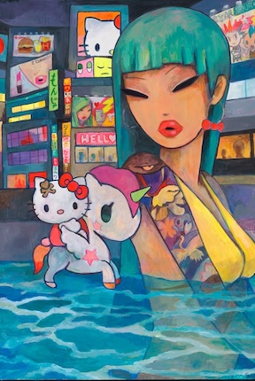
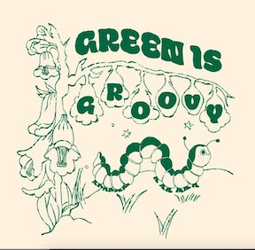
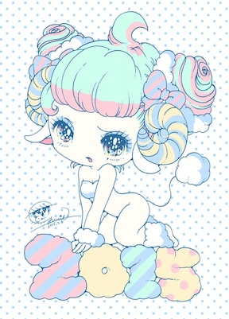

Simone's art inspires me because his art has a very youthful vibe and I like how much color he uses in all of his pieces. Additionally, I love how his art style is very unique, while still being recognizable at the same time.

Hannah Michelle inspires me because her art is simple yet captivating. Her artwork is very cutesy style as well and I love her used of color, glitter, cute faces, and characters. I love how she uses a multitude of different media, often making stickers, prints and even clothing.

Yurie Sekiya is a Japanese artist who graduated with a degree in graphic design. Her artwork inspires me because of how she combines her personal style of art digitally. Digital art really interests me a lot since I feel like it is a new medium, compared to traditional art forms.